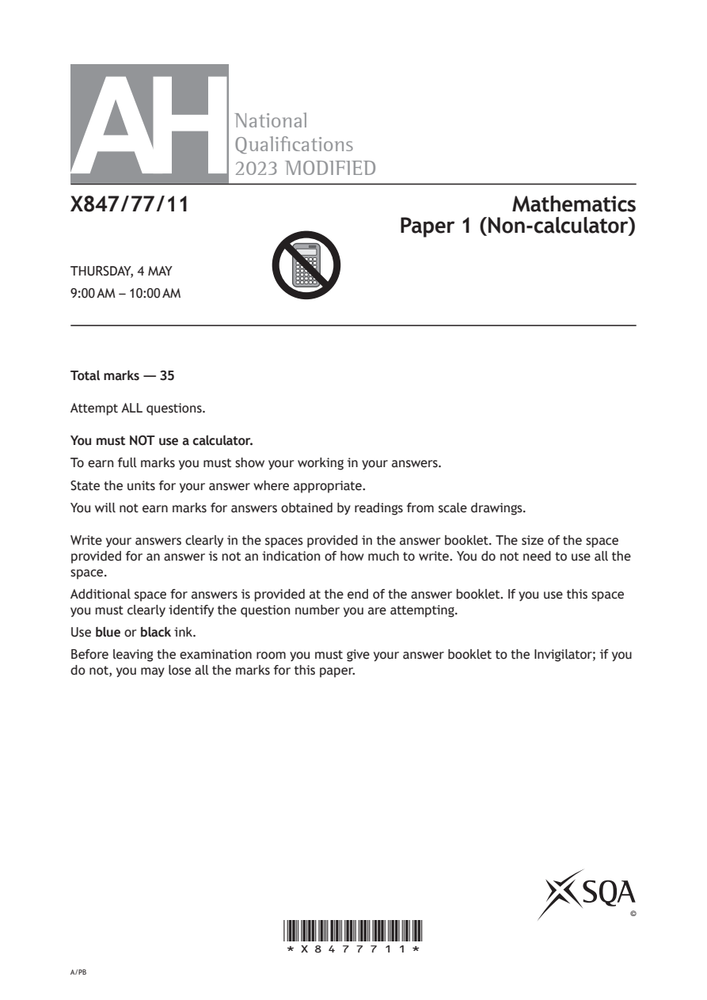
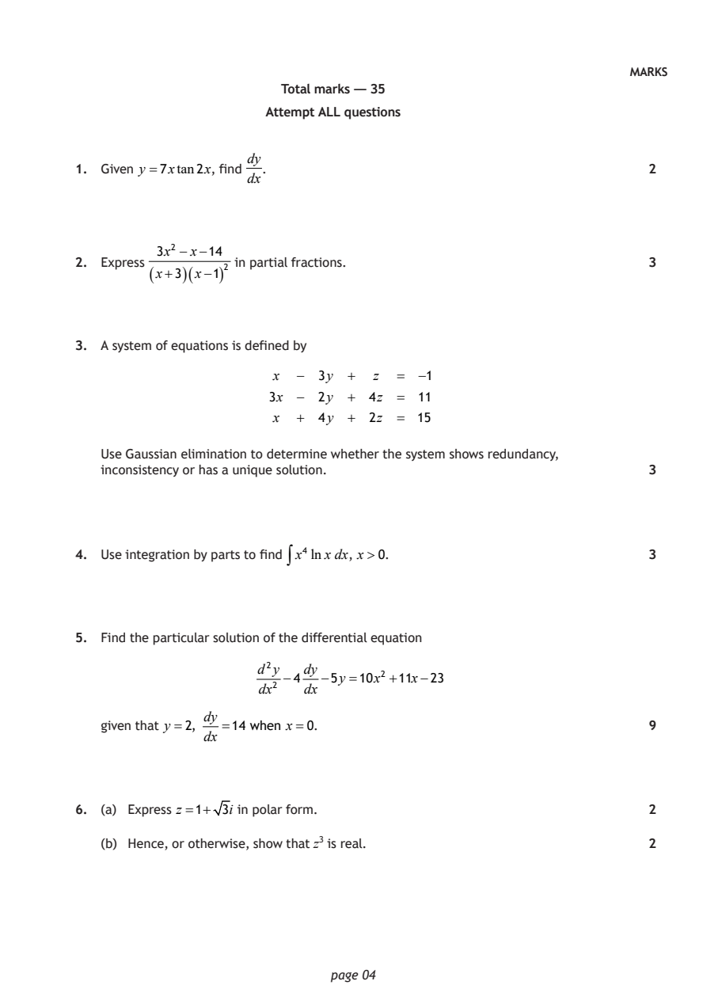
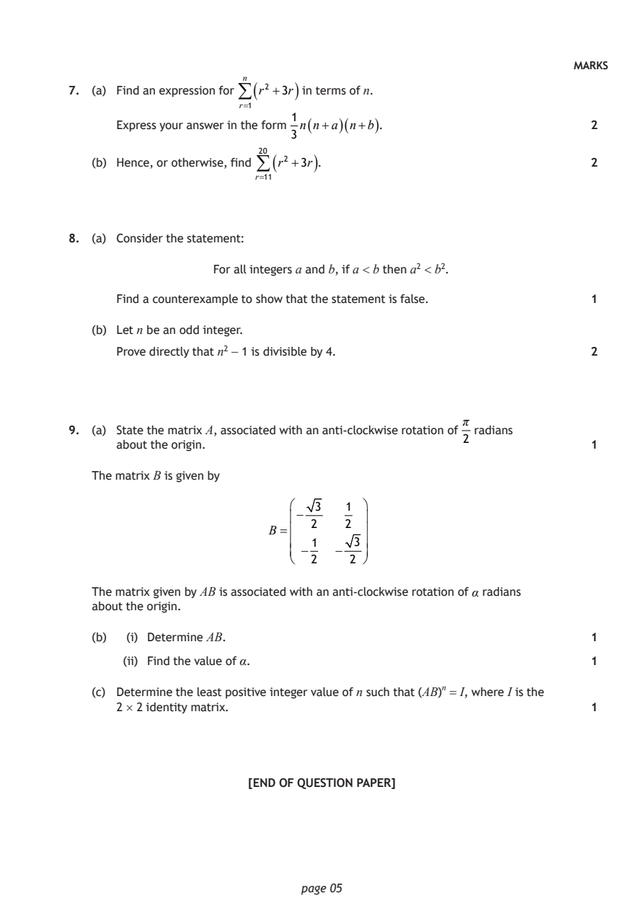
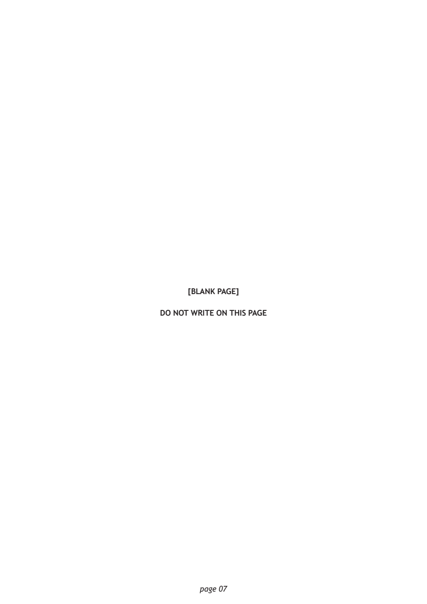

2023 Advanced Higher Mathematics - Paper 1 questions
Source: Scottish Qualifications Authority (SQA) / Qualifications Scotland. This is a StemInteract HTML companion, not an official HTML edition. Selectable text is supplied alongside original page images. Use the images or original PDF for equations, powers, fractions, vector notation, tables and diagrams; text extraction cannot fully preserve mathematical layout.
Jump to a question
PDF page 1

Selectable page text
AH
National
Qualications
2023 MODIFIED
X847/77/11 Mathematics
Paper 1 (Non-calculator)
THURSDAY, 4 MAY
9:00 AM – 10:00 AM
Total marks — 35
Attempt ALL questions.
You must NOT use a calculator.
To earn full marks you must show your working in your answers.
State the units for your answer where appropriate.
You will not earn marks for answers obtained by readings from scale drawings.
Write your answers clearly in the spaces provided in the answer booklet. The size of the space
provided for an answer is not an indication of how much to write. You do not need to use all the
space.
Additional space for answers is provided at the end of the answer booklet. If you use this space
you must clearly identify the question number you are attempting.
Use blue or black ink.
Before leaving the examination room you must give your answer booklet to the Invigilator; if you
do not, you may lose all the marks for this paper.
©
*X8477711*
A/PBPDF page 2

Selectable page text
FORMULAE LIST
Standard derivatives Standard integrals
f (x) f′(x) f (x) ∫ f (x)dx
1
1
sin⁻¹x sec²(ax) tan(ax)+c
1−x² a
1 1 ⎛ x⎞
cos⁻¹x
−
sin⁻¹⎜ ⎟+c
1−x² a² −x² ⎝a⎠
1 1 1 ⎛ x⎞
tan⁻¹x tan⁻¹⎜ ⎟+c
1+x² a² +x² a ⎝a⎠
1
tanx sec² x ln|x|+c
x
1
cotx −cosec²x e^{a}^{x} e^{a}^{x} +c
a
secx secxtanx
cosecx −cosecxcotx
1
lnx
x
e^{x} e^{x}
Summations
1
(Arithmetic series) Sₙ = n⎡2a+(n−1)d⎤
⎣ ⎦
2
( )
a 1−rⁿ
(Geometric series) Sₙ = ,r ≠1
1−r
n n(n+1) n n(n+1)(2n+1) n n²(n+1)²
∑r = , ∑r² = , ∑r³ =
2 6 4
r=1 r=1 r=1
Binomial theorem
n ⎛n⎞ ⎛n⎞ ₙ n!
(a+b)ⁿ =∑ ⎜ ⎟aⁿ⁻^{r}b^{r} where ⎜ ⎟= Cᵣ =
⎝r⎠ ⎝r⎠ r!(n−r)!
r=0
Maclaurin expansion
f′′(0)x² f′′′(0)x³ fⁱ^{v}(0)x⁴
f(x)= f(0)+ f′(0)x+ + + +...
2! 3! 4!
page 02PDF page 3

Selectable page text
FORMULAE LIST (continued)
De Moivre’s theorem
[r(cosθ+isinθ)]ⁿ =rⁿ(cosnθ+isinnθ)
Vector product
a×b= a bsinθnˆ
i j k
a₂ a₃ a₁ a₃ a₁ a₂
= a₁ a₂ a₃ =i −j +k
b₂ b₃ b₁ b₃ b₁ b₂
b₁ b₂ b₃
Matrix transformation
⎛cosθ −sinθ⎞
Anti-clockwise rotation through an angle, θ, about the origin, ⎜ ⎟
⎝sinθ cosθ ⎠
[Turn over
page 03PDF page 4
Paper 1, Question 1Paper 1, Question 2Paper 1, Question 3Paper 1, Question 4Paper 1, Question 5Paper 1, Question 6
Selectable page text
MARKS
Total marks — 35
Attempt ALL questions
dy
1. Given y =7xtan2x, find . 2
dx
3x² −x−14
2. Express in partial fractions. 3
(x+3 )(x−1 )
²
3. A system of equations is defined by
x − 3y + z = −1
3x − 2y + 4z = 11
x + 4y + 2z = 15
Use Gaussian elimination to determine whether the system shows redundancy,
inconsistency or has a unique solution. 3
4. Use integration by parts to find ∫x⁴ lnx dx, x>0. 3
5. Find the particular solution of the differential equation
d²y dy
−4 −5y =10x² +11x−23
dx² dx
dy
given that y =2, =14 when x=0. 9
dx
6. (a) Express z =1+ 3i in polar form. 2
(b) Hence, or otherwise, show that z³ is real. 2
page 04PDF page 5
Paper 1, Question 7Paper 1, Question 8Paper 1, Question 9
Selectable page text
MARKS
7. (a) Find an expression for ⁿ ( r² +3r ) in terms of n.
r=1
1
Express your answer in the form n ( n+a )( n+b ) . 2
3
(b) Hence, or otherwise, find ²⁰ ( r² +3r ) . 2
r=11
8. (a) Consider the statement:
For all integers a and b, if a < b then a² < b².
Find a counterexample to show that the statement is false. 1
(b) Let n be an odd integer.
Prove directly that n² − 1 is divisible by 4. 2
π
9. (a) State the matrix A, associated with an anti-clockwise rotation of radians
2
about the origin. 1
The matrix B is given by
3 1
−
2 2
B=
1 3
− −
2 2
The matrix given by AB is associated with an anti-clockwise rotation of α radians
about the origin.
(b) (i) Determine AB. 1
(ii) Find the value of α. 1
(c) Determine the least positive integer value of n such that (AB)ⁿ = I, where I is the
2 × 2 identity matrix. 1
[END OF QUESTION PAPER]
page 05PDF page 6

Selectable page text
[BLANK PAGE]
DO NOT WRITE ON THIS PAGE
page 06PDF page 7

Selectable page text
[BLANK PAGE]
DO NOT WRITE ON THIS PAGE
page 07PDF page 8

Selectable page text
[BLANK PAGE]
DO NOT WRITE ON THIS PAGE
page 08